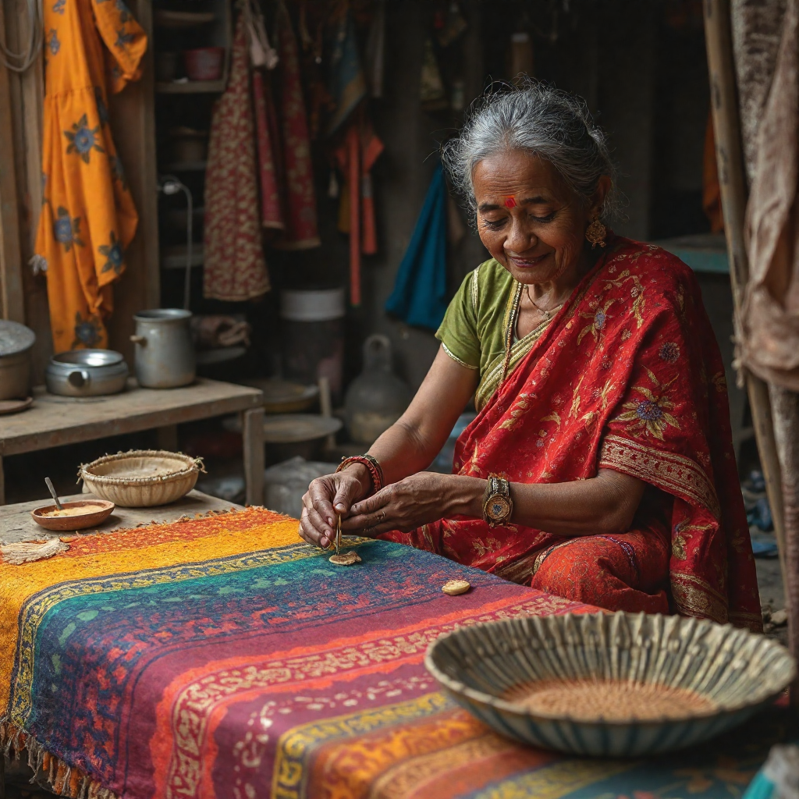
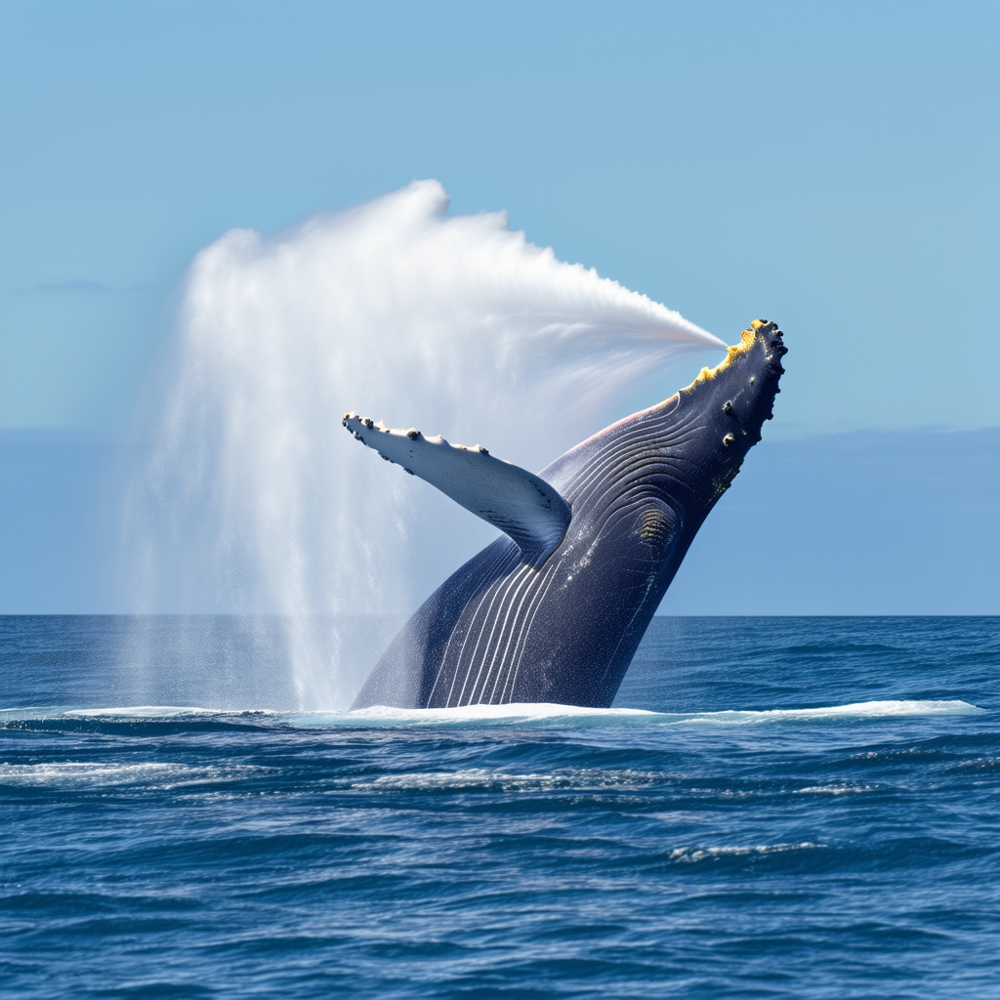
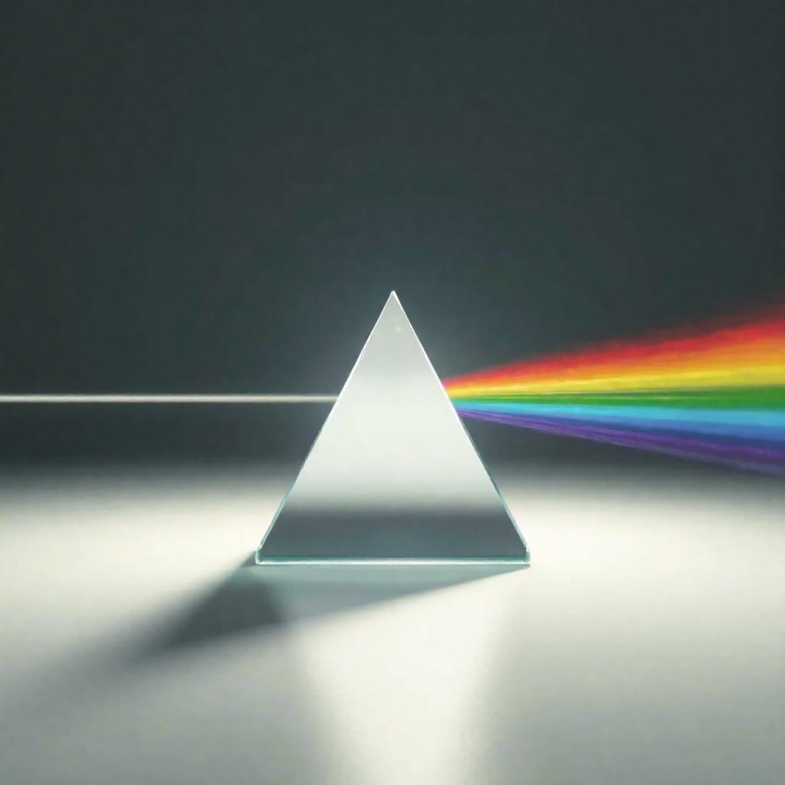
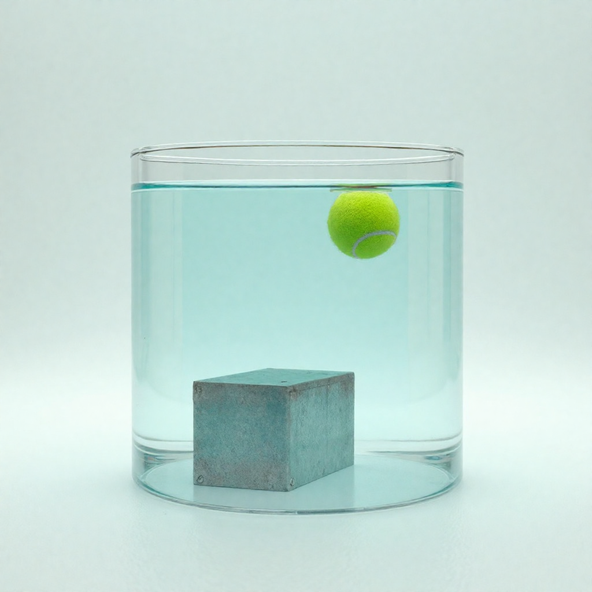

Reasoning Generation
Generate an image that represents a winter sport in Switzerland
A winter sport often enjoyed in Switzerland, involving snow covered slopes
Create an image representing India's most famous traditional craft

Most representative craft of India
Visualize a famous Egyptian historical landmark

A massive stone statue of a mythical creature that is a prominent historical landmark in Egypt
Illustrate how an octopus reacts to danger
Octopus behavior when facing danger
Show what typically happens after a whale surfaces

Common behavior after a whale surfaces
Demonstrate light dispersion through a prism

Light dispersion from a glass prism
Visualize objects with different densities in water
